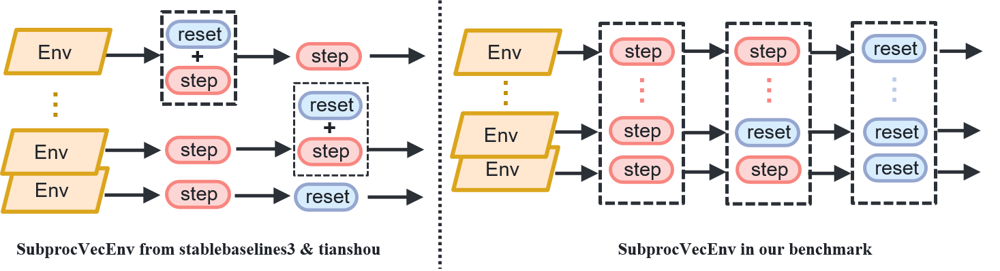

Environment Wrapping
You can choose language by
This project provides three forms of Environment (Path: Alg_Base/rl_a3c_pytorch_benchmark/envs): the base Environment class BenchEnv_Multi(), the Environment class wrapped by OpenAI Gym (Gynasium) gym()gynasium(), and our own implementation of the parallel Environment class.
The relationships among these three Environment types are shown in the figure below:
{kind=link}
Diagram of the three environment classes
1 Base Environment Class
Part 1 Interface Details
The base environment class is the class for direct communication between the algorithm side and the simulator side, mainly responsible for multi-process communication and data transmission with the simulator. If you only need to call the class for testing, you can directly jump to: configuration file and constructorSee the specific code inAlg_Base/rl_a3c_pytorch_benchmark/envs/environment.pyinBenchEnv_Multi()1.__init__: Used to initialize the communication interface, number of processes, and other essential parameters for the environment.
Action_dim(int): Agent action dimension
action_list(list): Used to convert discrete action commands into continuous movement commands
The storage order of
action_listis:[Forward, Backward, Left, Right, CCW, CW], representing the movement commands “forward, backward, left, right, counterclockwise, clockwise.”
process_state(function): Function for post-processing the images
arg_worker(int): System parallelism count
process_idx(int): Current environment’s parallel index
Other_State(bool): Whether to enable additional state options on the simulator side:Other_State, detail see: Parameter Configuration
CloudPoint(bool): Whether to enable the point cloud option on the simulator side:CloudPoint, detail see: Parameter Configuration
RewardParams(bool): Whether to enable additional reward parameters options on the simulator side:RewardParams, detail see: Parameter Configuration
port_process(int): Port specified for data transmission between processes
end_reward(bool): Whether to enable additional end rewards(additional penalties if end reward is 0; additional rewards if end reward is not 0)
end_reward_list(list): Additional end rewards list (valid only whenend_rewardis enabled)
scene(str): Determines the current experimental scene (valid only whenauto_startis enabled)
Valid scenes include:
["citystreet", "downtown", "lake", "village", "desert", "farmland", None]
weather(str): Determines the weather of the current experimental scene (valid only whenauto_startis enabled)
Valid weathers include:
["day", "night", "foggy", "snow", None]
auto_start(bool): Whether to automatically start the simulator
delay(int): Configure how long the system waits for the map to load, only works ifauto_start(bool)is enabled.
Control_Frequence(int): Specifies the system control frequency
reward_type(str): Specifies the type of reward (can choose different baseline algorithms for reward)
verbose(bool): Configure the environment to output log files or not2.step: Used for the environment's simulationInput Parameters:
action(numpy.int64): Action taken by the agentReturn Parameters:
image(numpy.ndarray): The image returned for the next time step (already post-processed usingprocess_state)
reward(float): Reward for the current time step
done(bool): Whether the current environment has ended
self.SuppleInfo(list): Supplementary information (ifOther_StateorCloudPointorRewardParamsis enabled, it will be retrieved here)2.reset: Used to restart the environmentInput Parameters:
None
Return Parameters:
image(numpy.ndarray): Same explanation as above
self.SuppleInfo(list): Same explanation as above
Part 2 Configuration File
Since the above environment interface has many parameters, this project provides a configuration file to simplify the configuration process. The content of the configuration file is as follows:See the specific code inAlg_Base/rl_a3c_pytorch_benchmark/config.json{ "Benchmark": { "Need_render": 0, "Action_dim": 7, "State_size": 84, "State_channel": 3, "Norm_Type": 0, "Forward_Speed": 40, "Backward_Speed": -40, "Left_Speed": 40, "Right_Speed": -40, "CW_omega": 2, "CCW_omega": -2, "Control_Frequence": 125, "port_process": 39945, "end_reward": false, "end_reward_list": [ -20, 20 ], "scene": "citystreet", "weather": "day", "auto_start": true, "Other_State": false, "CloudPoint": false, "RewardParams": true, "RewardType": "default", "verbose": false, "delay": 20 }, "LunarLander": { "Need_render": 1, "Action_dim": 4, "State_size": 84, "State_channel": 3, "Norm_Type": 0 } }
Among them,
"Benchmark": The corresponding parameters are the configuration parameters for the simulation environment proposed in this project.
"LunarLander": The parameter configuration for the Gym environmentLunarLander, used only for compatibility testing.
"Need_render": Select rendering mode (Gym environments require a rendering mode; the default for this project is 0).
"Action_dim": Dimension of the agent’s action space.
"State_size": Size of the images output by the environment.
"State_channel": Number of channels in the images output by the environment (=3 for RGB images, =1 for grayscale images).
"Norm_Type": Normalization method for the images (default normalization to[0,1]).
"Forward_Speed": Speed corresponding to the agent’s forward action ( \(m/s\)).
"Backward_Speed": Speed corresponding to the agent’s backward action ( \(m/s\)).
"Left_Speed": Speed corresponding to the agent’s left movement action ( \(m/s\)).
"Right_Speed": Speed corresponding to the agent’s right movement action ( \(m/s\)).
"CW_omega": Speed corresponding to the agent’s clockwise action ( \(rad/s\)).
"CCW_omega": Speed corresponding to the agent’s counterclockwise action ( \(rad/s\)).
"Control_Frequence": Frequency at which the agent operates (the simulator runs at 500 Hz, while the algorithm side generally runs at 125 Hz).
"port_process": Port specified for data transmission between processes.
"end_reward": Whether to enable additional end rewards.
"end_reward_list": List of additional end rewards (valid only whenend_rewardis enabled).
"scene": Determines the current experimental scene (valid only whenauto_startis enabled).
"weather": Determines the weather of the current experimental scene (valid only whenauto_startis enabled).
"auto_start": Whether to automatically start the simulator.
"Other_State": Whether to enable additional state options on the simulator side.
"CloudPoint": Whether to enable the point cloud option on the simulator side.
"RewardParams": Whether to enable additional reward parameters options on the simulator side.
"RewardType": Specifies the type of reward (can choose different baseline algorithms for reward).
Includes
"default", "E2E", "D-VAT", corresponding to Built-in Reward, [1], [2] reward setting
"verbose"(bool): Configures whether the environment outputs log files.
"delay"(int): Configures the duration the system waits for the map to load.
Part 3 Constructor
Alg_Base/rl_a3c_pytorch_benchmark/envs/environment.py in general_env()
# Generate a single-process environment (env_conf is the path to config.json)
env, _ = general_env(env_id="Benchmark", env_conf=env_conf, arg_worker=1, process_idx=0)
general_env: Generates an initialized environment based on the config.json file.
Input Parameters:
env_id(str): The name of the current environment ("Benchmark"or"LunarLander").env_conf(str): The path to the configuration fileconfig.json.arg_worker(int): Total number of processes for the environment.process_idx(int): The process index of the current environment.
Return Parameters:
env: Environment class.process_func: Environment post-processing function (for"Benchmark", there are no post-processing operations).
2 Gym Environment class
Considering that users often build reinforcement learning algorithms based on Gym and Gymnasium environment interfaces, or utilize libraries such as stable-baselines3 for algorithm validation, this project encapsulates the aforementioned base environment class to provide fully compatible environment classes for Gym and Gymnasium.
Alg_Base/rl_a3c_pytorch_benchmark/envs/envs_parallel.py
Part1 UAV_VAT (Adapting to Gym Library)
Alg_Base/rl_a3c_pytorch_benchmark/envs/gym_envs.py in the UAV_VAT(gym.Env) class
__init__: Initializes the gym environment (including initialization of action_space and observation_space).
Input Parameters:
arg_worker(int): Number of processes.conf_path(list): Path to the environment configuration file.env_conf_path(list): Path to the simulator configuration file.process_idx(list): Current process index.
reset: Resets the environment, returning the initial state.
Return Parameters:
state(np.ndarray): Returns the state (image).
step: Environment interaction, inputs action, retrieves state information.
Input Parameters:
action(torch.tensor): Action.
Return Parameters:
state(np.ndarray): Returns the state (image).reward(float): Reward.done(int): Whether the environment has ended.info(dict): Information, includinginfo["TimeLimit.truncated"]which indicates whether the reset was due to step ending.
Part 2 UAV_VAT_Gymnasium (Adapting to Gymnasium Library)
The Gymnasium environment is largely compatible with the Gym environment, and the following describes the differences from the Gym environment.
Alg_Base/rl_a3c_pytorch_benchmark/envs/gym_envs.py in the UAV_VAT_Gymnasium(gymnasium.Env) class. reset: Resets the environment, returning the initial state. Input Parameters:
seed(int): Random seed.
Return Parameters:
reset_info(dict): Reset environment information (default is empty).
step: Environment interaction, inputs action, retrieves state information. Return Parameters:
truncated(bool): Whether the reset was due to step ending (equivalent toinfo["TimeLimit.truncated"]in Gym environment).
Part3 Parallel Environment Encapsulation
ASYNC_SubprocVecEnv class in Alg_Base/rl_a3c_pytorch_benchmark/envs/async_vecenv.py.
Also, see the SubprocVecEnv_TS class in Alg_Base/rl_a3c_pytorch_benchmark/envs/async_vecenv_ts.py.
Existing Reinforcement Learning Library Parallel Class Features and Modifications in This Project

Existing reinforcement learning libraries directly compatible with gym environments, such as the
stable-baselines3andtianshoulibraries, provide the parallel environment classSubprocVecEnv, allowing users to directly encapsulate gym environments into parallel environments.The above-mentioned
SubprocVecEnvenvironment class checks whether to executeresetimmediately after executingstep, which may cause thestepandresetto be executed in the same cycle.(Not strictly aligned withstepandresetas required by the project environment.)Modification in this project: Strictly align
stepwithresetto keep individual environment operations synchronized.The
SubprocVecEnvclass from thestable-baselines3library is modified to theAsync_SubprocVecEnvclass, and theSubprocVecEnvandCollectorclasses from thetianshoulibrary are modified toSubprocVecEnv_TSandTS_Collectorclasses, respectively.The differences between the original and modified implementations are shown in the figure below.
Part 4 Interface Invocation
make_env() function in Alg_Base/rl_a3c_pytorch_benchmark/envs/envs_parallel.py.
make_env: Initializes multiple gym environments.
Input Parameters:
n_envs(int): Number of environments.rank(int): Current environment index.gym(bool): IfTrue, generates environments from the Gym library; ifFalse, generates environments from the Gymnasium library.monitor(bool): Whether to wrap in thestable_baselines3.common.monitor.Monitorclass.
Test Code:
gym_test() function and stableparallel_test() function in Alg_Base/rl_a3c_pytorch_benchmark/envs/envs_parallel.py.
If you wish to quickly test whether the implementation of the above environment class is correct, you can use the following code:
Single process (using only gym environment)
from gym.envs.registration import register register( id='UAVVAT-v0', entry_point='gym_envs:UAV_VAT', ) gym_test()
Use stable-baselines3 for algorithm testing
stableparallel_test(n_envs=16, gym=False)Note: When using the stable-baselines3 library for parallel training, invoke the above Async_SubprocVecEnv class.
Use tianshou for algorithm testing
test_tianshou_env(args)Note: When using the tianshou library for parallel training, you need to invoke the above SubprocVecEnv_TS class.
3 Parallel Environment Classes
The design goal of the base environment class (BenchEnv_Multi) is multi-process asynchronous computation (e.g., A3C algorithm), calling the environment class to obtain data within individual processes.
To better utilize the GPU for parallel acceleration, synchronize the data of the above classes and execute the same commands in parallel, allowing the algorithm to operate in a single process on a synchronized parallel data flow, leading to this class (Envs).
This environment is primarily tailored to user-defined algorithm design needs (in scenarios where stable-baselines3 and other Gym-based environments are not used for algorithm implementation).
Envs class in Alg_Base/rl_a3c_pytorch_benchmark/envs/envs_parallel.py.
Part 1 Envs()
Envs class in Alg_Base/rl_a3c_pytorch_benchmark/envs/envs_parallel.py.
__init__: Initializes the Envs parallel environment (including the initialization of action_space and observation_space).
- Input Parameters:
num_envs(int): Represents the concurrency level n.env_list(list(env)): Initialize the list returned by theGE(n)function by storing a number of pre-constructed environment classes in the listlogs_show(bool)：Whether to collect reward data in one of the environments to draw a training curve
reset ：reset environment, and return to the init environment
Return Parameters：
states：Returns a collection of states (images) for each environment
step ：Environment interaction, input action, get status information
Input Parameters：
actions：Each Agent action
Return Parameters：
states：Returns a collection of states (images) for each environmentrewards：The reward stack for each Agentdone：Whether each environment is in the end state
Part2 Data format changes before and after encapsulation
Comparison of data formats before and after encapsulation：
Pre-package(BenchEnv_Multi):
Data sampling：
state:ndarray,reward:float,done:float= env.step(action:int)Environment reset：
state:ndarray = env.reset()After packaging(Envs), set the parallel number n：
Data sampling：
states:ndarray(n,),rewards:ndarray(n),done:ndarray(n)= env.step(action:ndarray(n))Environment reset：
states:ndarray(n,) = envs.reset()
4 Performance Evaluation Metrics
1. Cumulative Reward CR
The cumulative reward uses continuous rewards, and a cumulative calculation is performed to evaluate the performance of the intelligent body in keeping the target at the center of the image, as shown in the following formula:
In the above formula, \(r_{ct}\) represents the continuous reward value at step \(t\), \(E_{ml}\) represents the maximum trajectory length, and \(E_t\) represents the length of this trajectory. For a graphical representation of continuous reward calculation, see Continuous Reward Diagram for Object Tracking.
2. Tracking Success Rate TSR
This metric uses discrete rewards to evaluate the proportion of successful tracking, calculated using the following formula:
In the above formula, \(r_{dt}\) represents the discrete reward value at step \(t\), \(E_{ml}\) is the maximum step length across batches, and \(E_l\) represents the length of the current batch. Detail parameters see: Built-in reward parameter configuration (valid for drones only, cars return reward=1 by default) For a graphical representation of discrete reward calculation, see Discrete Reward Diagram of the Tracking Object.
Reference: